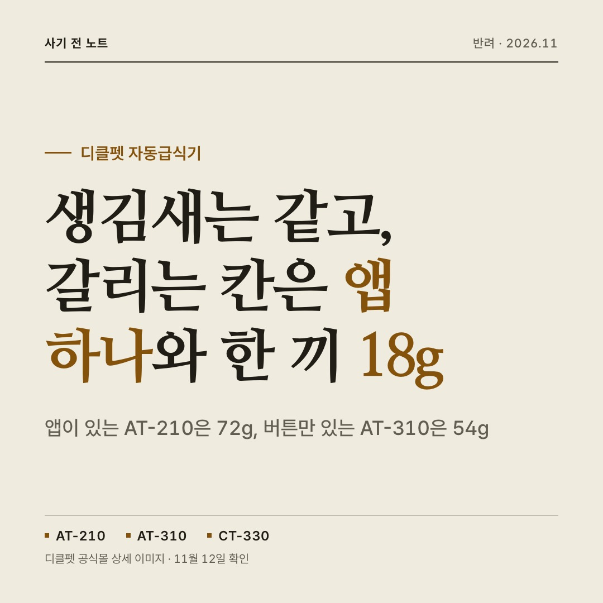
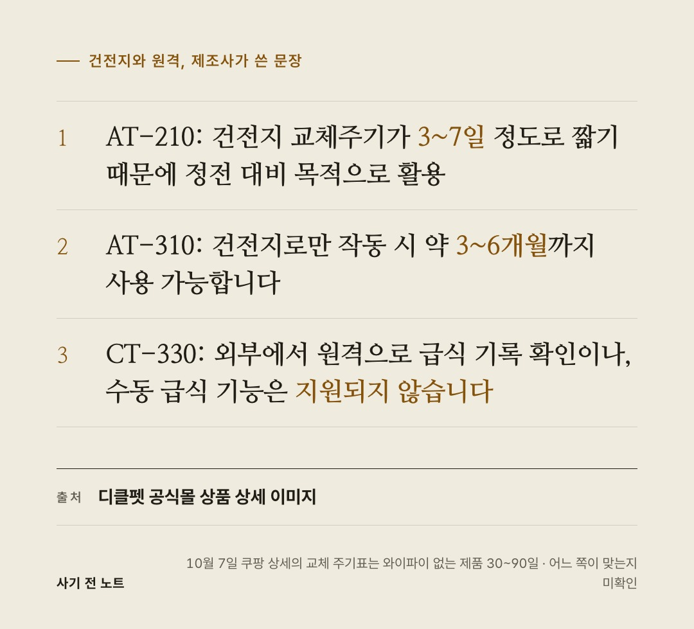

이 게시물은 쿠팡 파트너스 활동의 일환으로, 이에 따른 일정액의 수수료를 제공받습니다.
디클펫 자동급식기 AT-210 AT-310, 갈리는 칸은 앱과 한 끼 18g
회사에 앉아 있는데 밥그릇이 비었는지 궁금하다. 그 순간 휴대폰으로 한 끼를 더 줄 수 있는 건 디클펫 AT-210 쪽입니다. 생김새가 똑같은 AT-310은 와이파이가 없어서, 집 밖에서는 아무것도 바꿀 수 없거든요.
밖에서 앱으로 밥을 줘야 하는 집, 디클펫 AT-210 쿠팡 상품(11월 12일 49,700원)

처음 한 번은 비밀번호가 걸린 2.4GHz 와이파이에 붙여야 해요. 10월 19일에 모은 별점 1~3점 상품평 20개 중 4개가 연결이 어렵다거나 앱이 끊긴다고 했고, 최근 상품평 40개에서는 그런 말이 0개였습니다.
하루 네 끼면 버튼으로 충분해요
1포션 6g은 같은데, AT-210은 한 끼 약 72g까지 하루 10번, AT-310은 약 54g까지 하루 4번. 하루 최대로는 720g 대 216g이에요. 사료통 4L와 정전 대비 D형 건전지 3개는 둘이 같습니다.

하루 네 끼, 216g 안쪽으로 주는 집이라면 계산상 버튼만 있는 쪽으로 됩니다. 최근 상품평 40개 중 14개가 앱 없이 설정이 간단하다는 이야기였어요.
앱 없이 버튼으로 하루 네 끼, 디클펫 AT-310 쿠팡 상품(11월 12일 45,700원)
급식기 숫자는 '이만큼까지 나온다'는 상한일 뿐. 우리 아이에게 맞는 양은 사료 포장 표기나 수의사 안내가 기준입니다. 알갱이마다 무게가 달라서, 처음엔 몇 번 배출해 평균 무게를 재 보고 설정하라고 제조사가 적었어요.
한 끼 72g을 넘거나 알갱이가 크다면 CT-330
형제 둘 다 한 끼 상한이 72g이라, 그보다 많이 주는 집은 같은 브랜드 CT-330을 봅니다. 1포션 약 10g, 한 끼 최대 약 150g, 사료통 5L. 알갱이도 2~14mm 건식·혼합·에어드라이 사료까지 받아서 10mm보다 큰 사료를 쓰는 집에 맞아요.
대신 앱이 블루투스 전용이라 약 10m 안에서만 붙고, 밖에서 원격 급여는 안 된다고 제조사가 적었어요. 눈금도 10g 단위로 굵어서 조금씩 맞춰 줘야 하는 작은 아이에겐 덜 맞을 수 있죠.
한 끼가 72g을 넘는 집, 디클펫 CT-330 쿠팡 상품(11월 12일 39,700원)

건전지는 AT-210이 3~7일이라 정전 대비로만 쓰라는 안내예요. AT-310은 자료마다 3~6개월, 30~90일로 숫자가 달라 어느 쪽이 맞는지 확인하지 못했습니다. 습식 사료는 세 모델 모두 피하는 게 좋아요 — AT 두 모델은 내부 장애가 생길 수 있다고, CT-330은 권장하지 않는다고 했거든요.
세 대 모두 써 본 건 아니라, 숫자는 디클펫 공식몰 상세 이미지(11월 12일 확인)와 쿠팡 표기에서 옮겼어요. 갈림길은 두 개뿐입니다. 집 밖에서 앱이 필요한가, 한 끼가 72g을 넘는가.
표기를 옮겨 온 곳
- 디클펫 AT-210 공식몰 상세: https://diclepetree.co.kr/product/detail.html?product_no=1015
- 디클펫 AT-310 공식몰 상세: https://diclepetree.co.kr/product/detail.html?product_no=1133
- 디클펫 AT-330(CT-330) 공식몰 상세: https://diclepetree.co.kr/product/detail.html?product_no=1437
#디클펫자동급식기 #디클펫AT210 #디클펫AT310 #디클펫CT330 #자동급식기비교